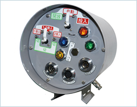

配電用変電所からの高圧送電の監視および開閉器制御を行う装置
※この製品は電力会社専用品のため、ホームページでのご紹介のみとさせていただきます。
カタログ等の資料につきましてはご用意致しておりませんのでご了承ください。
電力営業所の開閉器制御の中枢となるものであり、中央から常時監視を行い状態変化に応じ配電線自動開閉器を遠隔制御する装置。事故停電区間を最小限に切り離し、お客さまの停電区間を最小として最大限の健全区間を確保します。
| 種類 | 一体形・低圧スイッチ内蔵一体形・モニタリング対応 |
|---|---|
| 開閉器制御 | 通信よる遠隔制御 |
| 状態監視 | 開閉器投入開放状態・開閉器1側2側電圧の有無 等々 |
| 計測機能 | 線路電圧計測・位相計測 等々 |
| 通信線 | ペアケーブルおよび同軸ケーブル |
| 構造 | 気密構造 |
ご相談は計測システム事業部 Tel. 06-6387-1726